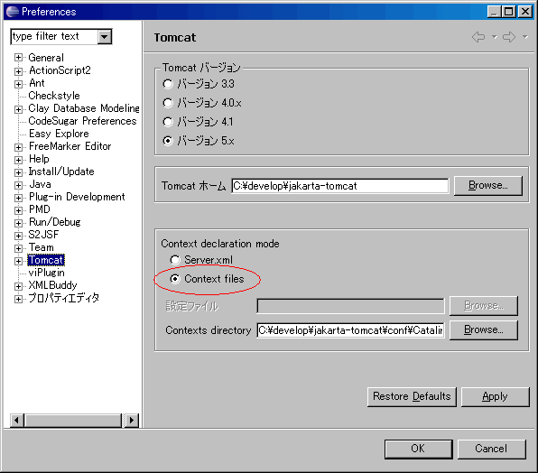
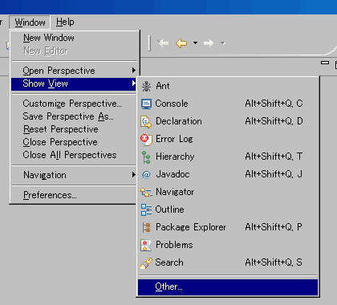
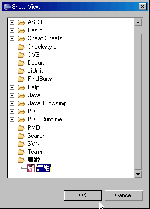

|
 |
Japanese site. | ||||
About MaihimeEclipse plug-in to launch Tomcat quickly. You can also enable or disable the context of tomact, when checking or deselecting checkbox options. InstallUpdate site : http://eclipse.seasar.org/updates/3.1/ Preparation before installs1.Install "Sysdeo Eclipse Tomcat Launcher plugin"http://www.sysdeo.com/sysdeo/eclipse/tomcatplugin 2.Change "Context declaration mode"Window -> PreferencePreference -> Tomcat -> Context declaration mode check "Context files".  3.Edit the server.xmlWhen the contexts in TOMCAT_HOME\conf\server.xml overlaps with the contexts in TOMCAT_HOME\conf\Catalina\localhost , delete the contexts from TOMCAT_HOME\conf\server.xml. Usage1.Show Maihime view Select "Maihime". 2.Checking or deselecting checkbox options. And launch Tomcat
Requires plug-in |